Editor tour
What the plugin adds to the Godot editor, captured in Godot 4.7.2 on a map made with Generate Map (Senegal Savanna preset, seed 7). The guide explains each setting in full.
The whole window
Nothing opens in a separate window: the tools sit in the 3D editor menu bar, the brush draws in the 3D view and the settings fill the Inspector.

- New TerrainAdds a terrain to the open scene. Next to the tools it is only an icon.
- GroundPaints ground. The list beside it picks the ground style from the biome.
- Relief and FlattenRaise the ground (Ctrl to dig), or level it to the height under the click.
- Road, River, WaterholeTracks that follow the ground, rivers that carve their bed, dried waterholes.
- VegetationPaints plants, or places one tree or prop per click. The list picks what.
- Brush size and strengthAlso [ ] and - = in the 3D view.
- StatusWhat the plugin did last: the map seed, a build in progress.
- Brush ringWhere the tool acts, with its name, size and strength.
- LowPoly Terrain panelMap, Look, Roads, Rivers & Waterholes, Game and Advanced.
- Generate MapA whole map from the preset and the seed above it.
- _LowpolyTerrainRuntimeRebuilds and streams the terrain in game. Keep this child node.
A new terrain
Click New Terrain and the terrain is empty, with Ground already active. A line at the top of the 3D view says what to do until there is ground: drag to paint, or generate a map.
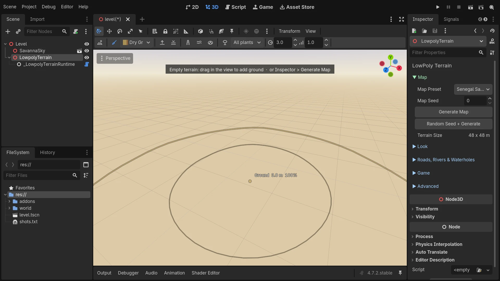
The toolbar
It lives in the 3D editor menu bar and follows the selection. Hover any icon in Godot for its name and keys.
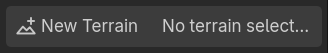
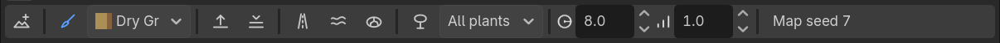
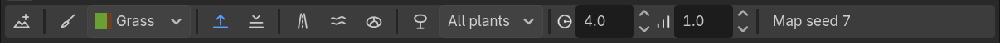
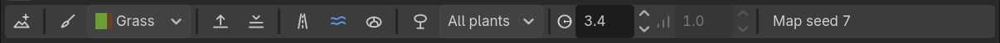
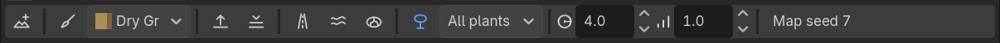
Brush rings
The ring follows the mouse over the ground. The inner ring marks half strength, and the label gives the tool, its size and strength. With Ground, Ctrl+drag over a road or a river turns it orange: that road or river would be erased.
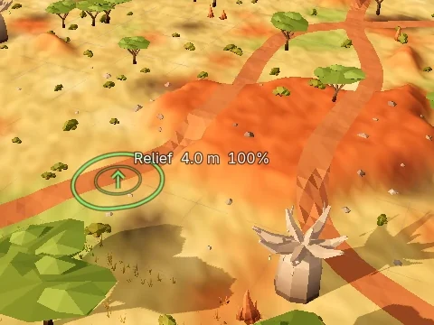
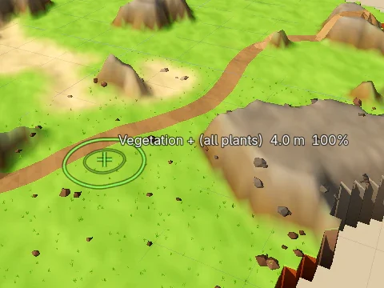
The Inspector
Select the terrain and the Inspector opens on the LowPoly Terrain panel. Its sections follow a first map, top to bottom; the rarely used settings wait in Advanced. Every setting has a tooltip.

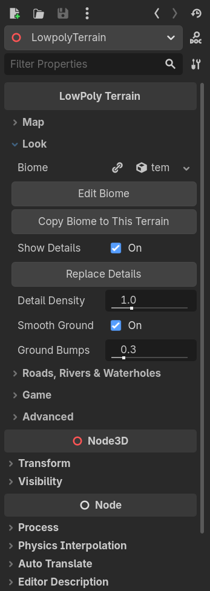
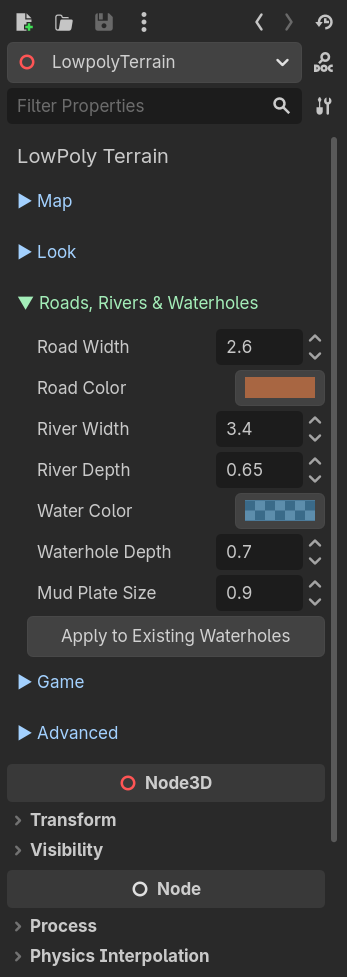
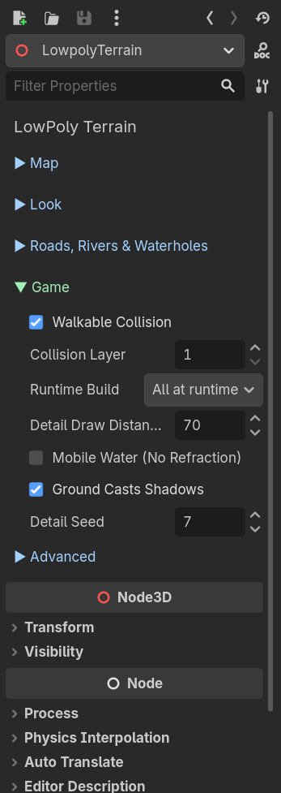
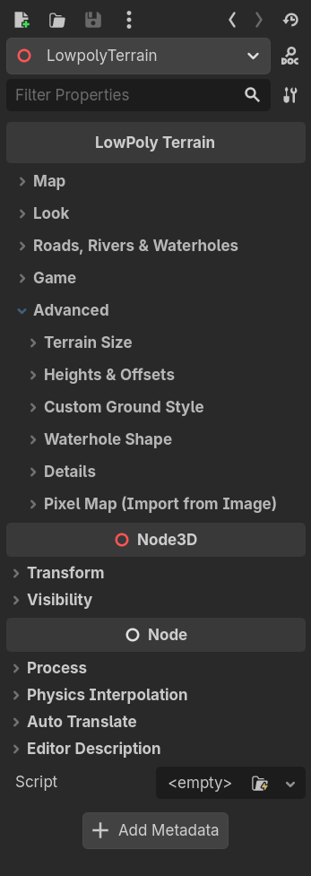
The biome
Look > Edit Biome opens the terrain's biome in the Inspector: its ground styles, the detail layers that say what grows where, the baked shading and the waterhole colours. Changes show on the terrain at once. A biome file is shared by every terrain that uses it; Copy Biome to This Terrain gives one terrain its own copy.
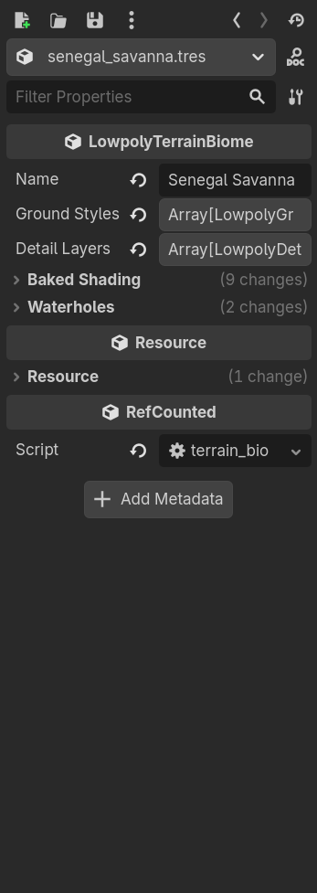